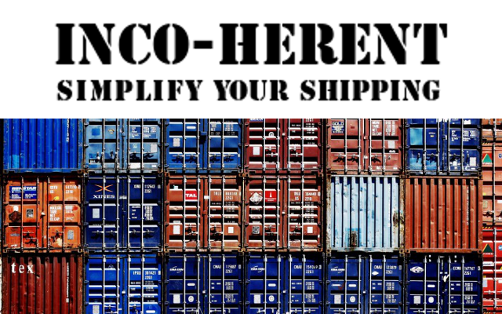

INCOtelligent smart contracts make identifying and implementing INCOterms foolproof by reducing risk at the point of execution.
Mission Statement
To provide clear understanding of how to choose and verify appropriate use of INCOterms when buying or selling across international borders to more accurately capture costs and risks.
How It Works
INCOtelligent smart contracts help your business navigate INCOterms for international purchasing contracts.
By using a set of guided questions, INCOtelligent smart contracts help you select the right INCOterm for your business. (Already know which INCOterm you’d like to use? Skip this step by directly selecting your INCOterm.)
The legal specifications associated with your selected INCOterm are automatically inserted into your INCOtelligent smart contract.
This legally binding smart contract can be integrated into your larger purchasing contract, ensuring that there are no inconsistencies or misunderstandings about your international shipping terms.
As soon as the goods are delivered to you, according to the INCOterm, payment is automatically submitted to the seller.
INCOterms explained
- If you choose EXW (Ex Works) shipping, the buyer pays all transportation costs, bears all risks, and is responsible for every step - arranging the full shipment from the supplier to the ultimate destination. The seller is only responsible for and ensuring the goods are available for pickup from the supplier at the agreed time. The ICC recommends EXW for containerized freight. However, this is not a convenient arrangement for a buyer without an agent in the export country.
- If you choose FOB (Free on Board) shipping, the seller is responsible for arranging every step to clear the goods for export from the seller’s country, up until the goods are loaded onboard the ship to leave the export country. The cost and risk are divided while the goods are onboard. The buyer assumes ownership when once the goods are onboard and arranges all other steps once the cargo leaves the export country on its way to its ultimate destination. The ICC recommends FOB for containerized freight.
- If you choose CFR (Cost and Freight) shipping, the seller is liable and responsible for all costs and freight until the goods arrive at the destination point. Once the goods are loaded on the ship, the risk passes to the buyer. The buyer is responsible for clearing the goods through customs. The ICC does not recommend CFR for containerized freight – it’s designed for bulk and break bulk cargo.
- If you choose CIF (Cost, Insurance And Freight) shipping, the seller is responsible for all costs and freights until the goods arrive at the destination point and also pays insurance costs. Once the goods are loaded on the ship, the risk passes to the buyer. The buyer is responsible for clearing the goods through customs. The ICC does not recommend CIF for containerized freight – it’s designed for bulk and break bulk cargo.
- If you choose DDP, the seller pays for all transportation costs, bears all risks, and is responsible for every step – arranging the full shipment from the supplier to the ultimate destination. The ICC recommends DDP for containerized freight. However, it’s not a convenient arrangement for sellers without an agent in the import country.
Subscription Services
INCOtelligent members enjoy unlimited access to smart incoterm contracts for $99.00 per quarter.
Single contracts are also available for $10.00 each.
Send inquires to support@INCO-herent.com
FAQs
What is an INCOterm?
Incoterms are a series of pre-defined commercial terms published by the ICC relating to international commercial law. Incoterms rules are intended to clearly communicate the tasks, costs, and risks associated with international transportation and delivery of goods.
What is a smart contract?
A smart contract is a self-executing contract stored on blockchain. Smart contracts facilitate the transfer of digital currencies or assets once agreed upon conditions are met, such as the delivery of goods according to a predetermined incoterm.
Why blockchains?
Blockchain is a digital ledger in which transactions made in cryptocurrency are recorded chronologically and publicly. Because of this, blockchains are transparent and cannot be corrupted.
What is cryptocurrency?
Cryptocurrency is a digital currency. Encryption techniques are used to regulate the generation of units of currency and verify the transfer of funds. Cryptocurrency operates independently of a central bank.
About Us
INCO-herent was founded at the 2018 Cleveland, Ohio Global Legal Hackathon.
Founding Members:
- 5th Level Dragonborn: Mara Hirz
- Horror Cabin Survivor: Jackson Biesecker
- Human Mix-Tape: Dana Beveridge
- The Bashful Drummer: Kevin Burwell
- Amateur Parakeet Wrestler: Mark Bruening